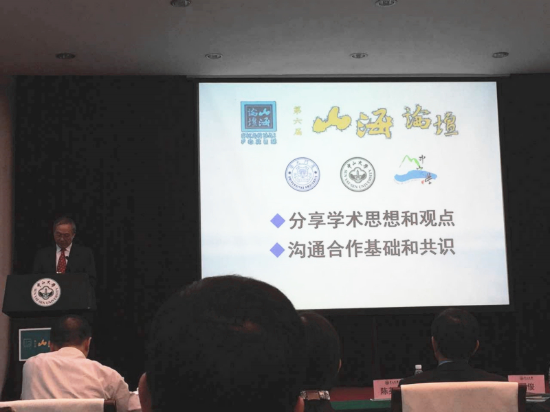
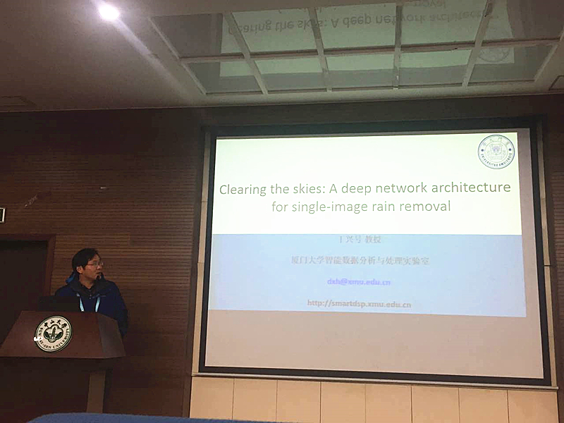

11月23-25日,第六届“山海论坛”在广州中山大学召开。论坛汇聚了来自广州中山大学、高雄中山大学、厦门大学两岸三校的近200位专家学者,就共同关注的学术领域进行交流与研讨。本届山海论坛一大特色是设置了十大分组研讨领域，这些研讨领域涉及文、理、医、工、社会科学及交叉学科的方方面面，既突出三校传统学科的优势，又紧贴时代科技发展的需求，意味着三校学术交流与合作的深度与广度达到前所未有的峰值。高雄中山大学副校长陈英忠,厦门大学副校长詹心丽,广州中山大学校长罗俊、校长助理王雪华等出席了本次论坛。

在论坛开幕式上,罗俊校长追溯了三校共同的合作基础及绵长的情谊,指出在中国从教育大国迈向教育强国的当下,努力成为优秀一流的大学是三校共同的历史使命和志向目标。他介绍了广州中山大学近年来各项事业的进展情况,期望三校能继续携手推动师生间的交流互访,推动创新平台的开放共享,建立完善的项目评审制度,为三校在优势和特色学术领域的务实合作提供有力支撑。陈英忠副校长、詹心丽副校长也分别在开幕式上致辞。著名有机化学家,中国科学院院士陈新滋教授为与会代表作了《大学教育与全人发展的一些思考》的报告。陈新滋院士凭借其多年从事教学科研的经验,和与会代表分享了他对大学育人理念与实践所形成的独到见解。
本届山海论坛一大特色是设置了十大分组研讨领域,包括:经济管理、两岸研究、高等教育研究、文学与文化、海洋与气候、大数据与高性能计算、物理与天文、化学、材料科学与工程及精准医学等。这些研讨领域涉及文、理、医、工、社会科学及交叉学科的方方面面,既突出三校传统学科的优势,又紧贴时代科技发展的需求,意味着三校学术交流与合作的深度与广度达到前所未有的峰值。
11月23日，我实验室丁兴号教授与傅雪阳博士抵达广州应邀赴中山大学参与第六届“山海论坛”，就大数据与高性能计算研讨领域，对我们实验室最新科研成果做了深刻的汇报，汇报标题名为《Clearing the skied: A deep nework architecture fo single-image rain removal》。本次汇报赢得了热烈的反响，台下掌声雷鸣。

“山海论坛”是由高雄中山大学、厦门大学及广州中山大学共同发起、共同参与的学术论坛,由三校轮流主办,旨在开拓未来校际间的合作机会,提升三校的研究能量。首届“山海论坛”于2011年12月在高雄中山大学举办,广州中山大学曾于2013年举办第三届“山海论坛”,并于今年再次举办第六届山海论坛。本次论坛促进了各校各实验室的学术交流，促进了各领域的研究，为新兴科技的发展起到了不可否认的卓越贡献，希望在今后的论坛中能有更多更出色的研究成果出现。